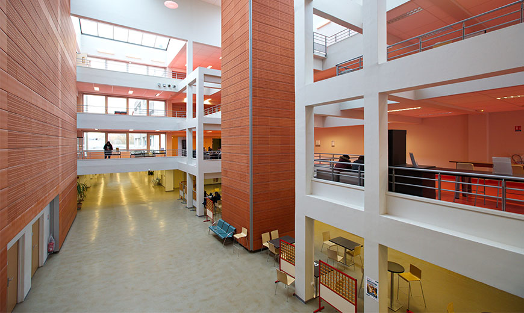
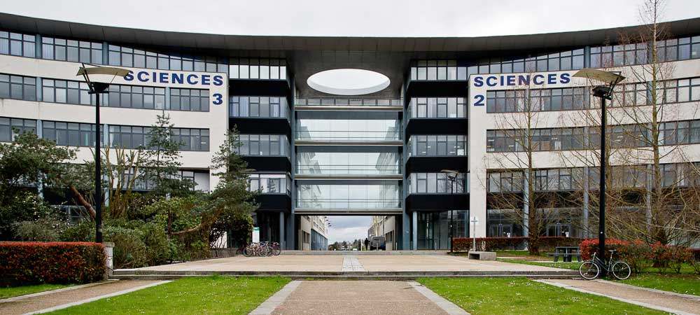
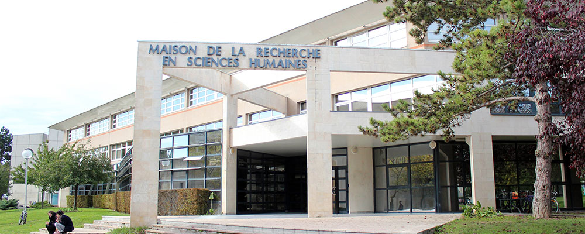

Université Grenoble Alpes
Grenoble Images Paroles Signal Automatique (GIPSA)
Le GIPSA-Lab intervient sur les aspects techniques et informatiques du projet, notamment en ce qui concerne le traitement du signal et l’ingénierie des systèmes embarqués. Il travaille avec le LPNC sur la simulation et le prototypage de dispositifs en réalité augmentée, intégrant des éléments auditifs et tactiles pour restituer l’environnement spatial aux utilisateurs malvoyants.
Laboratoire de psychologie et NeuroCognition (LPNC)
Le LPNC se spécialise dans les processus perceptifs et cognitifs liés à l’espace et au mouvement. Dans SAM-Guide, le laboratoire contribue à modéliser les mécanismes de perception spatiale sans vision, et participe activement à la conception des interfaces sensorielles permettant de viser des cibles à l’aveugle en utilisant des sons 3D. Son approche repose sur des protocoles rigoureux de psychologie expérimentale et de neurosciences cognitives.
Paris
Centre Borelli – ENS Paris Saclay
Remplaçant le CMAP depuis 2023, le Centre Borelli apporte une expertise pointue en acoustique computationnelle et spatialisation sonore. Il développe des algorithmes pour la représentation sonore 3D en temps réel, permettant à l’utilisateur d’entendre la position d’objets ou de cibles dans l’espace, de manière intuitive. Ce travail est fondamental pour les applications sportives comme le laser-run ou les scénarios de navigation.

Centres de Mathématiques appliquées (CMAP)
Partenaire actif lors des premières années du projet, le CMAP a développé des modèles mathématiques et outils de simulation acoustique de haute précision. Son travail sur la représentation numérique de la propagation sonore a jeté les bases des premières expérimentations sur la spatialisation, notamment pour des usages sportifs. Depuis 2023, ses missions ont été reprises par le Centre Borelli.
[Partenaire jusqu’à 2023]
Université de Normandie
Rouen

Laboratoire d’informatique, de traitement de l’information et des systèmes (LITIS)
Le LITIS est responsable du développement des dispositifs tactiles de guidage. Il conçoit des outils comme des ceintures vibrantes intelligentes, intégrant capteurs et retours haptiques, pour offrir une navigation sans la vue. Il travaille également sur la fusion de données multisources (vidéo, GPS, inertiels) et sur la modélisation d’un système de mobilité autonome pour les personnes aveugles.
Caen

Centre d’études Sports et Actions motrices (CESAMS)
Spécialisé dans la science du mouvement, le CESAMS étudie les comportements moteurs en situation de handicap visuel, et participe à la conception des tâches expérimentales comme la navigation en réalité virtuelle ou les parcours sportifs simulés. Son rôle est crucial pour adapter les interfaces à la dynamique corporelle des utilisateurs et garantir une interaction fluide et sécurisée.

Centre d’études et de recherche sur les risques et les vulnérabilités (CERREV)
Le CERREV aborde le projet sous l’angle sociologique et ergonomique. Il évalue les usages réels, l’acceptabilité sociale des dispositifs, et les obstacles à leur diffusion. Son implication garantit que les innovations de SAM-Guide soient conçues avec et pour les utilisateurs finaux, en tenant compte de leurs besoins, habitudes, et contextes de vie.
Laboratoire d’informatique, de traitement de l’information et des systèmes (LITIS)
Le LITIS est responsable du développement des dispositifs tactiles de guidage. Il conçoit des outils comme des ceintures vibrantes intelligentes, intégrant capteurs et retours haptiques, pour offrir une navigation sans la vue. Il travaille également sur la fusion de données multisources (vidéo, GPS, inertiels) et sur la modélisation d’un système de mobilité autonome pour les personnes aveugles.
Centre d’études Sports et Actions motrices (CESAMS)
Spécialisé dans la science du mouvement, le CESAMS étudie les comportements moteurs en situation de handicap visuel, et participe à la conception des tâches expérimentales comme la navigation en réalité virtuelle ou les parcours sportifs simulés. Son rôle est crucial pour adapter les interfaces à la dynamique corporelle des utilisateurs et garantir une interaction fluide et sécurisée.
Centre d’études et de recherche sur les risques et les vulnérabilités (CERREV)
Le CERREV aborde le projet sous l’angle sociologique et ergonomique. Il évalue les usages réels, l’acceptabilité sociale des dispositifs, et les obstacles à leur diffusion. Son implication garantit que les innovations de SAM-Guide soient conçues avec et pour les utilisateurs finaux, en tenant compte de leurs besoins, habitudes, et contextes de vie.
Le consortium SAM-Guide réunit des laboratoires aux expertises complémentaires en sciences cognitives, informatique, traitement du signal, mathématiques appliquées, psychologie, ergonomie et sciences sociales. Cette collaboration pluridisciplinaire permet de concevoir des solutions technologiques innovantes et centrées sur l’humain, tout en tenant compte des enjeux scientifiques, techniques et sociétaux du projet. En mutualisant leurs compétences, les partenaires contribuent à faire avancer la recherche sur l’accessibilité, l’autonomie et l’inclusion des personnes en situation de handicap visuel.